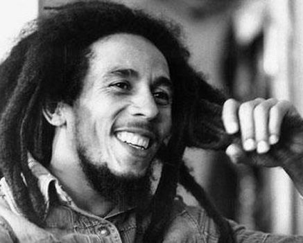

Bob Marley and the Wailers were a Jamaican reggae band created by Bob Marley. The band formed when self-taught musician Hubert Winston McIntosh (Peter Tosh) met Neville Livingston (Bunny Wailer), and Robert Nesta Marley (Bob Marley) in 1963 and taught them how to play guitar, keyboards, and percussion. By late 1963 Junior Braithwaite, Beverley Kelso, and Cherry Smith had joined the Wailers. After Peter Tosh and Bunny Wailer left the band in 1974, Bob Marley began touring with new band members. His new backing band included brothers Carlton Barrett and Aston "Family Man" Barrett on drums and bass respectively, Junior Marvin and Al Anderson on lead guitar, Tyrone Downie and Earl "Wya" Lindo on keyboards, and Alvin "Seeco" Patterson on percussion. The "I Threes", consisting of Judy Mowatt, Marcia Griffiths, and Marley's wife, Rita, provided backing vocals.
The band was formed by Bunny Wailer originally known as Bunny Livingston, Peter Tosh, and Bob Marley. Of all the three, Peter Tosh was the original leader who taught music to the other members and also taught Bob Marley how to play guitar. The Wailers began as Bunny Livingston, Peter Tosh and Bob Marley. Following the 1974 parting of The Wailers, Bob Marley proceeded with his group Bob Marley & The Wailers, with the Wailers Band as the backing band, and the I Threes (Rita Marley, Judy Mowatt, & Marcia Griffiths) as backup vocalists. The Wailers Band consisted of, among others, bassist Aston "Family Man" Barrett and his brother, drummer Carlton "Carly" Barrett, who had been members of Lee "Scratch" Perry's studio band, The Upsetters,[1] with whom The Wailers had recorded some of their most notable songs. After the death of Bob Marley in 1981, the Wailers Band was led by Aston Barrett and Junior Marvin. The band continued to play a heavy worldwide touring schedule. Carlton "Carly" Barrett, 36, was murdered at his Jamaica home in 1987. In 2008 former Wailers Al Anderson and Junior Marvin formed The Original Wailers, with the latter departing in 2011.
In 2014, The Wailers embarked on worldwide "Legend Tour", marking the 30th anniversary of the release of the best-selling reggae album of all time. In 2015, Aston "Familyman" Barrett began the process of reuniting past members of the Wailers. Shows occurred in South America which included past members such as Barrett, Al Anderson, and Tyrone Downie. The Wailers performed in India for the first time. A US and UK tour took place in 2016. On August 21, 2020, The Wailers released One World, their first studio album in over 25 years.[3] The album includes the single "One World, One Prayer", co-written and produced by Emilio Estefan, featuring Skip Marley, Farruko, Shaggy, and Cedella Marley.
Robert Nesta Bob Marley, OM (6 February 1945 – 11 May 1981) was a Jamaican singer, songwriter, and musician. Considered one of the pioneers of reggae, his musical career was marked by fusing elements of reggae, ska, and rocksteady, as well as his distinctive vocal and songwriting style.
